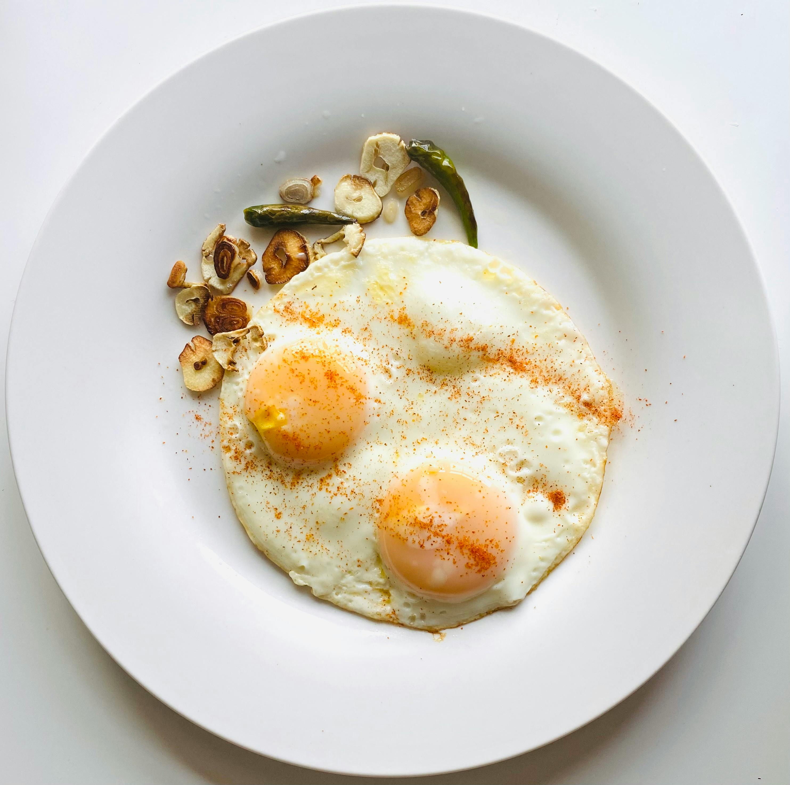

Fried Egg
Home

Description
A fried egg is always so awesome especially when it has a runny yolk.
It's classic, economical, and filling with rice.
Anyone should be able to cook a fried egg to save their life,
irrelevant of whether or not it tastes good.
Ingredients
- Egg, any size
- Cooking oil
- Salt, to taste
- Pepper, to taste
Instructions
- Prepare a pan, preferably a stainless steel one.
- Add cooking oil, until it covers the entire bottom surface of the pan.
- Heat the pan until the oil just starts to steam.
- Crack the egg, and pour its contents on the pan.
- Add salt and pepper to taste.
- Fry the egg until the bottom is cooked.
- Baste the top of the egg if it is still uncooked.
- Remove the egg from the pan, and pat it dry with a kitchen napkin.
- Serve with any side, preferably rice.